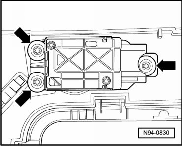

Access/Start Authorization Button
Access/Start Authorization
Access/Start Authorization Button
• The access/start authorization button (E408) allows the vehicle to be started without actively using the ignition key.
Removing
- Switch off ignition, switch off all electrical consumers and remove ignition key.
CAUTION!
When disconnecting battery, procedure must always be followed as described in the reinformation anual --> [ Battery, with Auxiliary Battery or Two-Battery Layout, Disconnecting and Connecting ] Battery, with Auxiliary Battery or Two-Battery Layout, Disconnecting and Connecting. Not adhering to sequence will result in the deactivation of Main Battery Switch -E74- and subsequent damage to electrical system components.
- Disconnect battery --> [ Battery, One-Battery Layout, Disconnecting and Connecting ] Battery, One-Battery Layout, Disconnecting and Connecting.
- Remove gear selector cover --> Body Interior 68 Removal and Installation.
- Remove screws - arrows -.

- Disconnect electrical connector.
- Remove Access/Start Authorization Button (E408).
Installing
Install in reverse order of removal, noting the following:
• Adaptation or coding of Access/Start Authorization Button (E408) after removing and installing is not necessary.